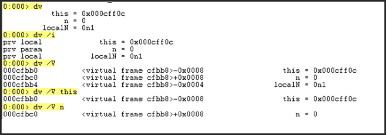
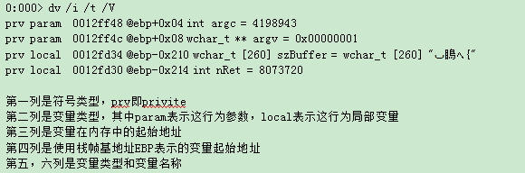
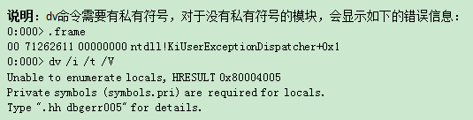
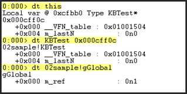

概述：记录 Windbg 调试中的一些基础命令，方便查询，Windbg Preview 版本自带了 Local Help 手册，可以使用自带的。
基础命令
| 说明 | 命令 | 用法 | 描述 |
|---|
| 说明 | 命令 | 用法 | 描述 |
| 帮助 | ? | ?? 表达式 | 显示常规命令计算表达式的值 |
| .help | .help | 显示元命令(以 . 开头的命令) | |
| .hh | .hh.hh bp | 打开windbg help文档打开windbg help文档，并自动输入bp命令进行搜索 | |
| 版本 | version | | 显示调试器和调试目标版本 |
| vercommand | | 显示调试器启动时的命令行 | |
| vertarget | | 显示调试目标系统信息 | |
| 清空屏幕 | .cls | | |
| 查看异常信息 | .ecxr | | 显示异常信息的上下文 |
| .lastevent | | 显示最近一次发生的异常信息或事件 | |
| .exr -1 | | 显示最近一次的异常记录 | |
| !analyze | !analyze -v!analyze -hang!analyze -f | 显示当前异常信息分析线程栈，看是否有线程blocking其他线程See an exception analysis even when the debugger does not detect an exception. | |
| 寄存器 | r | | 显示各寄存器的值 |
| 时间 | .time | | 显示system/process/kernel/user time |
| Switch between 32-bit and 64-bit mode | !wow64exts.sw
.load wow64exts | | 查看64位机器上生成的32位程序的dmp时，需要使用此命令转换一下模式!wow64exts.help 可查看相关帮助信息 |
调试命令
| 命令 | 说明 | 示例 |
|---|
| g | 继续执行 | |
| gu | 执行到当前函数返回 step out | |
| p | 单步调试 step over | |
| t | step into | |
| q | 结束调试会话/退出 | |
| .restart | 重新启动调试目标 | |
| .detach | 分离调试目标 | |
| .attach | 附加到存在的进程，参数为16进制的PID | .attach 0x123 |
| .create | 创建一个新的进程进行调试 | 例如调试cmd.exe.create cmd |
| .dbgdbg | 启动另一个调试器来调试当前调试器 | |
| .opendump | 打开dmp文件 | .opendump d:\dump\360tray.dmp |
模块信息
| 命令 | 说明 | |
|---|
| lm | 显示加载的模块信息，exe和dll等 | |
| lmvm 模块名lm v m 模块名 | 查看指定模块详细信息，比如查看360tray.exe中加载的appd.dll的信息示例： lmvm appd | |
调试符号
| 命令 | 说明 | 示例 |
|---|
| ld | 加载模块的调试符号 | ld appdld * |
| ln | 搜索相邻符号（距离指定地址最近的符号） | ln 722d0000 |
| x | 显示匹配参数类型的符号 | 显示kernel32.dll所有以Create开头的符号x kernel32!Create* |
| .sympath | 设置符号文件路径 | .sympath d:\dump |
| .symfix | 设置系统符号存放位置 | 设置系统符号存放位置 |
| .reload | Reload symbol information for all modules** | |
进程
| 命令 | 说明 | 示例 |
|---|
| .process | 显示当前进程的EPROCESS | |
| !process EPROCESS | 查看某个线程 | |
| !process 0 0 | 查看系统当前所有进程 | |
线程
| 命令 | 说明 | 示例 |
|---|
| ~ | 显示所有线程信息 | |
* [Command]. [Command]~#[Command] | 为所有线程执行指定命令为当前线程执行指定命令为导致当前异常或调试事件的线程执行指定命令 | 查看所有线程的栈信息：~* k |
Number Number s | 显示序号为Number的线程切换当前线程为序号Number的线程 | 显示10号线程：10切换到10号线程： 10 s |
| ~~[TID] | 线程ID为TID的线程 | |
| ~ Number n~ Number m | SuspendThread 增加线程的挂起计数ResumeThread 减少线程的挂起计数 | ~ 10 n~10 m |
| ~ Number f~ Number u | Freeze thread 冻结线程Unfreeze thread 解冻线程控制被调试的线程的冻结状态, 与上面两个命令类似（处于冻结状态时恢复目标执行时这个线程不会恢复执行，这个状态是调试器维护的一个状态，执行~ 线程号 n 增加挂起计数后，执行g运行时该线程也不会运行） | |
| ~ Number s | 在恢复执行命令g前加线程限定符，可以只恢复指定的线程执行（只对该线程调用ResumeThread使其恢复执行，其他线程仍处于挂起状态） | |
| !runaway | 显示每个线程运行时间，可以方便找到消耗cpu时间长的线程 | |
| .ttime | display thread times (user + kernel mode) | |
| !gle!gle -all | displays the last error value for the current thread ->GetLastErrordisplays the last error value for all threads | |
| !error | decodes and displays information about an error value.Specifies one of the following error codes:Win32WinsockNTSTATUSNetAPI | |
栈
| 命令 | 说明 | 示例 |
|---|
| k | 显示EBP，返回地址和源文件信息（如果有私有符号的话） | |
| kb | 显示EBP，返回地址，函数参数及源文件信息（如果有私有符号的话） | |
| k L | L选项表示不显示源文件信息，也可以用于其他命令比如 kb L， kv L或写为 kL，kbL，kvL | |
| kv | 在kb的基础上增加显示FPO（栈指针省略）信息和调用协议（调用协议仅支持On x86-based processors） | |
| kpkP | 根据私有符号文件中的函数原型信息自动显示参数信息P为大写，表示每个参数占一行 | |
| kn | 在k命令的基础上，每行前显示栈帧的序号 | |
| kn f | f选项表示显示每两个相邻栈帧的内存距离，即栈帧基地址的差值 | |
内存数据
涉及内存的查看、修改、搜索、申请、写入。
查看
| 说明 | 命令 | 描述 | 示例 |
|---|
| 查看内存数据 命令格式：d{a|b|c|d|D|f|p|q|u|w|W} [Options] [Range]dy{b|d} [Options] [Range]d [Options] [Range] | da | ASCII字符 | Range指定要显示的内存范围，有如下几种表示方法：起始地址+终止地址比如：dd 0012fd9c 0012fda8起始地址+L/l+元素个数比如：dd 0012fd9c L4 或 dd 0012fd9c l4终止地址+L/l+负号+元素个数比如：dd 0012fda8 L-4 或 dd 0012fda8 l-4 |
| du | Unicode字符 | | |
| dc | DWORD和ASCII码 | | |
| dd | DWORD | | |
| dD | 双精度浮点数 | | |
| df | 单精度浮点数 | | |
| dp | 指针 | | |
| dq | 四字/8字节 | | |
| dw | 一个字/2字节 | | |
| 查看局部变量dv [Flags] [Pattern] | dv | 查看局部变量 | dv 02sample!gGlo*dv命令可以带有通配符, 来查看具有某命名模式的变量. |
| dv /i | 查看局部变量, 并显示符号的类型和参数类型. | |  |
| dv /t | 查看局部变量, 并显示每个局部变量的数据类型 | |  |
| dv /V | 查看局部变量, 并显示变量的存储位置 | |  |
| dv /V VariableName | 查看指定名称的变量 | | |
| 查看复合类型变量 | dt | Display Type的缩写. 当变量的类型为复合类型, 比如说结构体或者类, 那么dv命令只会显示变量的地址. dt命令可以将一块内存按照某个数据类型来解析, 其中的数据类型需要作为参数被传递给dt命令.-b：递归显示所有子类型-r ：指定显示深度，-r0表示不显示子类型-y：附加搜索选项，只显示某个匹配的字段 |  |
编辑
| 说明 | 命令 | 描述 | 示例 |
|---|
| 编辑内存数据 | 按字符串方式编辑命令格式：e{a|u|za|zu} Address “String” | 其中a和u分别代表不是以0结尾的ASCII和Unicode字符串，za和zu分别代表以0结尾的ASCII和Unicode字符串 | ezu 12fc94 “Debug” 修改0012fc94地址的内容为Unicode字符串”Debug” |
| 按数值方式编辑命令格式：e{b|d|D|f|p|q|w} Address [Values] | Values指定新的值，如果命令中没有指定该值，则Windbg会以交互式方式让用户输入 | ew 12fc94 41 41 41 41 41 将0012fc94地址开始的5个WORD都改为0x41 | |
搜索
| 说明 | 命令 | 描述 | 示例 |
|---|
| 搜索内存数据 | 指定范围搜索任何ANSII或UNICODE字符串命令格式：s -Flags sa|su Range | [Flags]用来指定搜索选项：L/l+整数 指定字符串的最小长度s 将搜索结果保存起来r 在保存的结果中搜索 Range指定内存范围，写法与d命令的Range参数一样 | s -[L5] sa poi(nt!PsInitialSystemProcess) L200在nt!PsInitialSystemProcess变量所指地址开始的512字节（0x200）范围内搜索任何长度不小于5的ANSII字符串 |
| 指定内存地址范围内搜索与指定对象相同类型的对象命令格式：s -Flagsv Range Object | Object ： Specifies the address of an object or the address of a pointer to an object | | |
| 指定范围内搜索某一内容模式命令格式：s -[[[Flags]Type]] Range Pattern | Type指定要搜索内容的数据类型，即决定匹配搜索内容的方式。取值可以为：b（字节），w（字），d（双字），q（四字），a（ASCII字符串），u（Unicode字符串）。如果不指定，默认为b。 Pattern指定要搜索的内容 | s -u 0x400000 L2a000 “AdvDbg”从0x400000开始的2a000范围内搜索Unicode字符串”AdvDbg” | |
| 在当前进程的所有模块中进行搜索!for_each_module s-a @#Base @#End “Debugger” | 在每个模块中搜索字符串” Debugger”其中@#Base和@#End是!for_each_module定义的别名，其他的还有：@#ModuleName（模块名称），@#SymbolFileName（符号文件名称），@#Size（模块大小），@#SymbolType（符号文件类型） | | |
申请、释放内存
| 说明 | 命令 | 描述 | 示例 |
|---|
| .dvalloc | .dvalloc [申请内存大小] | 申请内存 | 申请1000个字节的内存
.dvalloc 1000 |
| .dvfree | .dvfree /d [开始地址] [大小] | 释放内存，使用 /d 命令更安全 | 释放 01190000 处开始 1000个字节的内存
.dvfree /d 0x01190000 1000 |
设置断点
| 命令 | 说明 | 示例 |
|---|
| 命令 | 说明 | 示例 |
| bp | 设置断点命令格式： bp[ID号] [Options] [Address [第几次命中断点时中断到调试器]] [“一组命令，用分号隔开”] Options选项可用的值：/1 断点被命中一次后自动删除，即一次命中断点/p 只用于内核调试中，/p后跟一个EPROCESS结构的地址，即对指定的进程设置断点/t 只用于内核调试中，/t后跟一个ETHREAD结构的地址，即对指定的线程设置断点/c 和 /C 指定中断给用户的最大函数调用深度和最小函数调用深度举例：bp /c5 MSVCR80D!printf 只有当函数调用栈深度浅于5时才中断。 Address表达方式：使用模块名加函数符号：bp LocalVar!FuncC 或带偏移值 bp LocalVar!FuncC+9直接使用内存地址：bp 00401089如果使用完全的调试符号，调试符号中包含源代码行信息，可以用： bp｀模块名!XXX.cpp:行号｀ ， 其中｀为重音符号对于C++的类方法，可以使用类名双冒号(::)或双下划线(__)来连接类名和方法名： bp MyClass::MyMethod 或 bp MyClass__MyMethod 或 bp @@(MyClass::MyMethod) | （1）bp LocalVar!FuncC+9 其中 LocalVar为模块名称，FuncC为函数名称，9为偏移 （2）bp 00401089 在指定的地址上下断点 （3）bp MSVCR80D!printf + 3 2 “kv; da poi(ebp+8)” 在printf的入口偏移3的地址处下断点(为了让建立栈帧的代码执行完)，当第2次命中断点时中断到调试器，并自动执行kv和da poi(ebp+8)命令。 其中，da poi(ebp+8)用来显示printf的第一个参数所指定的字符串。 |
| bu | 用于对尚未被加载模块中的代码设置断点命令格式： bu[ID号] [Options] [Address [第几次命中断点时中断到调试器]] [“一组命令，用分号隔开”] | 对于调试动态加载模块的入口函数和初始化代码比较有用，比如对于即插即用设备的驱动程序。可以使用如下命令在入口函数处设置断点： bu MyDriver!DriverEntry |
| bm | 用于设置一批断点命令格式：bm [Options] SymbolPattern [第几次命中断点时中断到调试器] [“一组命令，用分号隔开”] bm命令要求目标模块的调试符号有类型信息，这通常需要私有符号文件，如果对公共符号文件的模块使用bm命令，会提示错误信息。解决这个问题的方法是使用 /a 开关，强制针对所有匹配的符号设置断点，无论是数据还是代码，建议只有在确信所有符号是函数时才使用。 | bm MSVCR80D!print* 对MSVCR80D中所有print开头的函数设置断点 |
| ba | 设置读，写，执行断点命令格式：ba[ID号] Access Size [Options] [Address [第几次命中断点时中断到调试器]] [“一组命令，用分号隔开”]其中Access指定触发断点的访问方式，Size指定访问的长度。 Access的取值如下：e 读取和执行指令时触发断点，即访问代码硬件断点r 读取和写入数据时触发断点w 写入数据时触发断点i 执行I/O访问时触发断点 Size的取值如下：对于访问代码硬件断点，它的值应该为1对于x86系统，可以为1，2，4，分别表示1字节访问，字访问和双字访问对于x64系统，可以为1，2，4， 8对于安腾系统，可以为1 - 0x80000000间的任意2次方值 | ba r1 0041717c 对地址0041717c的1字节访问，字访问和双字访问（读写）都会触发该断点 |
| bl | 列出当前所有断点 | |
| bc 断点号 | 删除断点 | 断点号可以使用*来通配所有断点，使用 - 来表示一个范围，或者使用逗号来指定多个断点号 |
| bd 断点号 | 禁用断点 | |
| be 断点号 | 启用断点 | |
| sxe ld:[dll名称] | 加载某个DLL时下断点 bu wininet!DllMain 与 sxe ld:wininet 效果相同bp kernel32!LoadLibraryW /bp kernel32!LoadLibraryA | sxe ld:wininet加载wininet时下断点sxe ld:/ sxe ud: 匹配所有DLL模块 |
| sxe ud:[dll名称] | 卸载某个DLL时下断点 | |
查看句柄信息
| 命令 | 说明 | 示例 |
|---|
| !handle | 扩展显示目标系统中一个或所有进程拥有的句柄的信息 | |
| !handle 4 f | 用’f’表示显示最详细的信息： | |
特定场景
转换 shellcode
# 申请1000个字节
0:000> .dvalloc 1000
Allocated 1000 bytes starting at 03060000
# eb 命令将shellcode写入到内存
0:000> eb 03060000 0x33 0xc0 0xc3 0x90
# u 命令反汇编
0:000> u 03060000
03060000 33c0 xor eax,eax
03060002 c3 ret
03060003 90 nop
03060004 0000 add byte ptr [eax],al
03060006 0000 add byte ptr [eax],al
03060008 0000 add byte ptr [eax],al
0306000a 0000 add byte ptr [eax],al
0306000c 0000 add byte ptr [eax],al
内存操作
读取
# 内存写入到文件
.writemem "D:\dump.bin" 起始地址 结束地址
# 带偏移量的写入
.writemem /o "D:\offset.bin" 起始地址 L长度
# PE文件头提取
.writemem "C:\pe_header.bin" @$exentry L1000
# 批量导出 DLL
.for_each (module {lm}) { .writemem "C:\dlls\${module.Name}.bin" ${module.Start} ${module.End} }
写入
.readmem {filename} {targetAddr} {filestart} {fileend}
.readmem "G:\\CWPP\\A_Virus\\shellcode.bin" 0000022a`c9790000 0 l0n4096